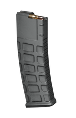
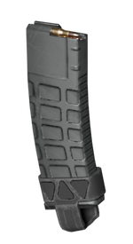
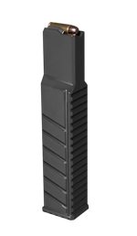
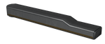
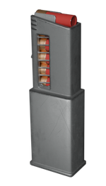

加长弹匣
The 加长弹匣 is a 弹匣 配件 acting as a middle ground between 容量, 人体工学 and 弹匣 count. It is the 默认 option on the majority of 武器.
变体
| Icon | 变体 | Weapon | 解锁等级 | 解锁费用 | 效果 |
|---|---|---|---|---|---|
 |
解放者 | 解放者 | 武器等级 1 |  0 0
|
容量 45 发, 6 初始弹匣, 8 最大弹匣, 3s 完整换弹, 2s 部分换弹 |
| 解放者 Penetrator | |||||
| Suppressor | |||||
| 解放者 Concussive | 武器等级 23 | 7,000
| |||
 |
卡宾枪 | 解放者 卡宾枪 | 武器等级 1 | 0
|
容量 45 发, 6 初始弹匣, 8 最大弹匣, 2.5s 完整换弹, 1.6s 部分换弹 |
 |
捍卫者 | 捍卫者 | 武器等级 1 | 0
|
容量 45 发, 5 初始弹匣, 7 最大弹匣, 2.8s 完整换弹, 2s 部分换弹 |
| Pummeler | |||||
 |
Knight | Gallant | 武器等级 14 | 7,000
|
人体工学 -15, 容量 70 发, 3 初始弹匣, 5 最大弹匣, 3s 完整换弹, 2s 部分换弹 |
| Knight | |||||
 |
Breaker (Regular) | Breaker | 武器等级 1 | 0
|
容量 16 发, 5 初始弹匣, 7 最大弹匣, 2.5s 完整换弹, 1.75s 部分换弹 |
| Breaker 燃烧弹 | 武器等级 22 | 13,000
| |||
| Breaker (S&P) | Breaker Spray&Pray | 武器等级 23 | 25,000
|
容量 16 发, 9 初始弹匣, 13 最大弹匣, 2.5s 完整换弹, 1.75s 部分换弹 | |

|
Stoker | Stoker | 武器等级 1 | 0
|
人体工学 -5, 容量 45 发, 3 初始弹匣, 5 最大弹匣, 2.8s 完整换弹, 1.73s 部分换弹 |
|
|
Censor | Censor | 武器等级 23 | 13,000
|
人体工学 -8, 容量 30 发, 4 初始弹匣, 6 最大弹匣, 2.9s 完整换弹, 1.67s 部分换弹 |
|
|
Hyena | Hyena | 武器等级 1 | 0
|
容量 15 发, 4 初始弹匣, 5 最大弹匣, 2.55s 完整换弹, 1.5s 部分换弹 |
配件
2x Tube Red Dot • 10x Sniper Scope • 4x Combat Scope • 全息瞄准镜 • 反射式瞄准镜 • 无准镜 • 反射式瞄准镜 Mk2 • 1.5x Tube Red Dot • 机械瞄具